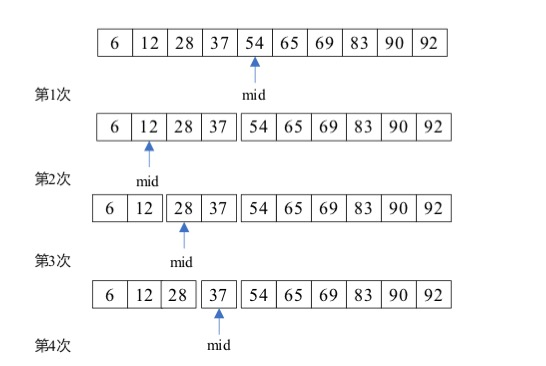

常见的查找算法（Python）
常见的查找算法（Python）
顺序查找
- 平均时间复杂度 O（n）
1 | def order_search(key, array): |
二分查找
- 时间复杂度 O(log2n)
- 二分查找又称折半查找，他是一种效率较高的查找方式。
- 要求：必须采用顺序存储结构，必须按关键字大小有序排列

1 | def binary_search(key, array): |
分块查找
- 算法思想：将n个数据元素”按块有序”划分为m块（m ≤ n）。每一块中的结点不必有序，但块与块之间必须有序；即第1块中任一元素的关键字都必须小于第2块中任一元素的关键字；而第2块中任一元素又都必须小于第3块中的任一元素…